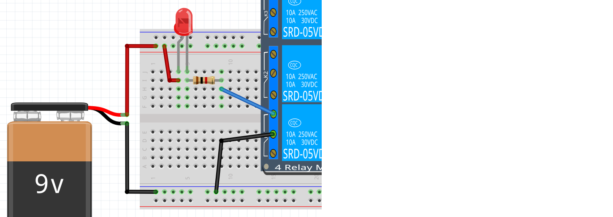
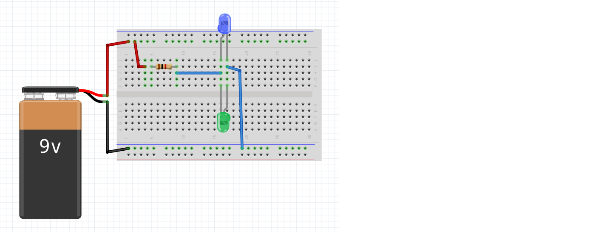
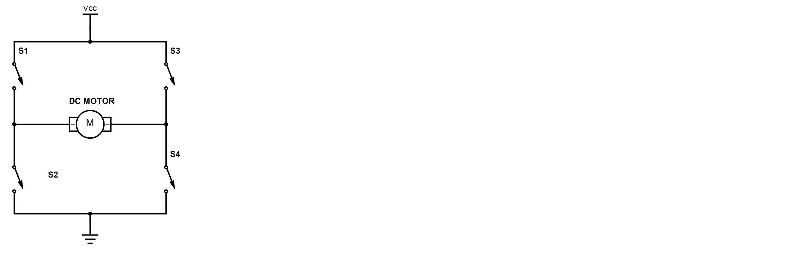
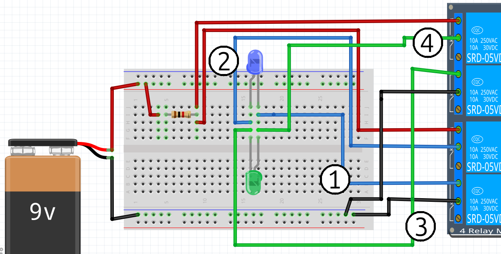

Lektion 23: Anslutning av ett relä¶
Ett relä är som en knapp som kan styras elektroniskt. Vi använder reläer för att skydda vår kära Arduino när vi styr kraftiga komponenter, till exempel DC-motorer.
Under den här lektionen ska vi se hur det fungerar.
Vi använder ett 4-relä kort: ett kretskort som har fyra reläer.
23.1. Koppla spänning till kretskortet¶
Koppla spänning till reläerna så här:

- Koppla
5Vpå Arduino medVCCpå kretskortet - Koppla
GNDpå Arduino medGNDpå kretskortet
Koppla en lysdiod till relä 1 så här:

 |
Vi kan koppla nästan vad som helst till ett relä: elkretsarna är separata! |
|---|---|
 |
Självklart använder vi bara spänning under 12 volt! |
|---|---|
- Koppla
+från 9V-batteriet till det långa benet på lysdioden - Koppla det korta benet på lysdioden till ena sidan av ett 1000 Ohm motstånd
- Koppla den andra sidan av motståndet till hål 3 (det hål längst upp på figuren) på relä 1 (reläet längst ner på figuren)
- Koppla
-från 9V-batteriet med hål 2 på relä 1
Lyser lysdioden? Varför?
23.1. Svar¶
Nej, den lyser inte. Vi har sett det i föregående lektion också.
23.2. Koppla GND till ingången på reläkortet¶
Koppla GND på Arduino med IN1 på reläkortet.
Vad ser och hör du när du gör det?

23.2. Svar¶
Du hör ett klick och lysdioden D5
på kortet börjar lysa.
Lysdioden vi har kopplat lyser också nu!
23.3. Två lysdioder¶
Bygg den här kretsen:

- Koppla
+från 9V-batteriet till ena sidan av ett 1000 Ohm motstånd - Koppla den andra sidan av motståndet till det långa benet på den blåa lysdioden
- Koppla det korta benet på den blåa lysdioden till
-från 9V-batteriet - Koppla det korta benet på en grön lysdiod till det långa benet på den blåa lysdioden
- Koppla det långa benet på den gröna lysdioden till det korta benet på den blåa lysdioden
Hur många lysdioder ska lysa? Varför?
23.3. Svar¶
En av de två. Bara en lysdiod lyser för att el bara kan gå i en riktning genom en lysdiod. Eftersom lysdioderna har olika riktningar, kan bara en av dem lysa samtidigt.
23.4. Den andra lysdioden¶
Ändra två sladdar för att få den andra lysdioden att lysa.
23.4. Svar¶
Det finns två sladdar kopplade till lysdiodernas ben. Byt sladdarna så att de blir kopplade till de motsatta benen.
23.5. En schematisk H-brygga¶
Vi ska nästan bygga en H-brygga. En H-brygga gör det möjligt att styra el så att den går åt båda håll i en elkrets. Den behöver vi för en DC-motor som kan gå fram och tillbaka!
För att förstå en H-brygga, kolla på den schematiska ritningen här:

Schemat ser lite ut som bokstaven H.
Jag har tagit schemat från en engelsk Arduino-kurs och det är lite mer formellt:
| Tecken | Betydelse |
|---|---|
VCC |
Matspänningen, t.ex. 5V från en Arduino, eller + från ett batteri |
S1 |
S är engelska för 'switch', som är en knapp, relä eller något annat som kan vara på eller av |
Elen går, som alltid,
från plus (dvs VCC) till minus (dvs GND). Sladdarna med numren
kan vara kopplade eller inte, samma effekt som att en knapp
är intryckt eller inte.
- I vilken riktning går elen när S1 och S4 är kopplade?
- I vilken riktning går elen när S2 och S3 är kopplade?
- Vad händer när bara S1 och S3 är kopplade?
- Vad händer när bara S2 och S4 är kopplade?
- Varför är en H-brygga farlig?
23.5. Svar¶
| Kopplat 1 | Kopplat 2 | Effekt |
|---|---|---|
| S1 | S4 | Elen går åt höger genom mittendelen |
| S2 | S3 | Elen går åt vänster genom mittendelen |
| S1 | S3 | Kortslutning! |
| S2 | S4 | Kortslutning! |
En H-brygga är farlig för att det är lätt att få kortslutning.
 |
Kortslutning betyder att el kan gå fritt (dvs utan motstånd) från plus till minus |
|---|---|
|
Fritt gående el värmer upp sladdarna |
|---|---|
|
Om din elkrets blir varm, stäng av elen genast! |
|---|---|
23.6. En H-brygga¶
Nu bygger vi H-bryggan på riktigt:

Vilket relä hör till vilken sladd i schemat från föregående fråga? Det är den blåa lysdioden som är viktigast.
| Relä | Sladd |
|---|---|
| S1 | ? |
| S2 | ? |
| S3 | ? |
| S4 | ? |
|
Det är förvirrande att 'S1' hör till ett relä (istället för en sladd). Inget problem för oss då! |
|---|---|
23.6. Svar¶
| Relä | Sladd | Varför |
|---|---|---|
| S1 | 4 | Kopplat till GND och det korta benet på den blåa lysdioden |
| S2 | 1 | Kopplat till 5V och det långa benet på den blåa lysdioden |
| S3 | 3 | Kopplat till GND och 'fel minus sida' (långa benet) på den blåa lysdioden |
| S4 | 2 | Kopplat till 5V och 'fel plus sida' (korta benet) på den blåa lysdioden |
23.7. Slutuppgift¶
20 minuter.
- Bygg upp H-bryggan från början
- Få den blåa lysdioden att lysa. Berätta hur elen går genom elkretsen
- Få den gröna lysdioden att lysa. Berätta hur elen går genom elkretsen